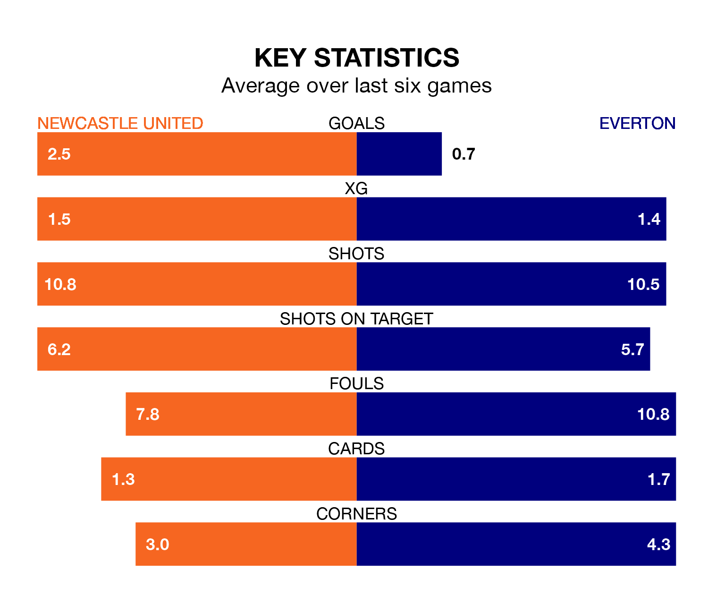

Everton come to St. James' Park to play Newcastle United on late Tuesday in terrible form, having collected just two points from their last six games.
The visitors have drawn two and lost four of their last six fixtures, while the Magpies have three wins and a draw.
With 30 goals in 29 games so far this season, Everton are the league's second-lowest scorers with 1.0 goals per game. But they are conceding fewer than average too, letting in 41 goals at a rate of 1.4 per game.
Newcastle, meanwhile, are above average scorers, with 2.2 goals per game, compared to a league average of 1.6. They have conceded 1.8 goals per game.
In Jordan Pickford, the Toffees can rely on one of the league's safest pair of hands. He has kept eight clean sheets in his 29 appearances this season, and only one other 'keeper – Arsenal's David Raya – has been able to prevent the opposition scoring on more occasions in the Premier League.
In United's net, Nick Pope has six clean sheets in 14 games.
In the last 10 years, Newcastle and Everton have played each other on 17 occasions. Newcastle won seven of them, Everton eight, and they drew twice.
On average, the Magpies scored 1.3 goals and the Toffees 1.5 in those matches.
Their last meeting was on December 7, when Everton won 3-0 at home.
The away team are 14th in the table after 29 games, of which they have won eight and drawn seven, earning 31 points.
The Magpies are six places ahead of Everton in eighth, with 13 wins and four draws putting them on 43 points.
Newcastle's last match was on Saturday, a 4-3 win against West Ham United, with Alexander Isak (two) and Harvey Barnes (two) getting the goals for the Magpies.
Everton lost 2-1 against AFC Bournemouth last time out, also on Saturday, with Beto Bercique on the scoresheet.
Tuesday's match will be refereed by Tony Harrington, who has taken charge of five Premier League games so far this season, issuing one red card and booking 18 players. He has not awarded any penalties.
The last Everton game Harrington refereed was the 1-1 draw away at Brighton and Hove Albion on February 24. He is yet to oversee a match featuring Newcastle this season.
Updated: 10:31 (UTC), 31/03/24